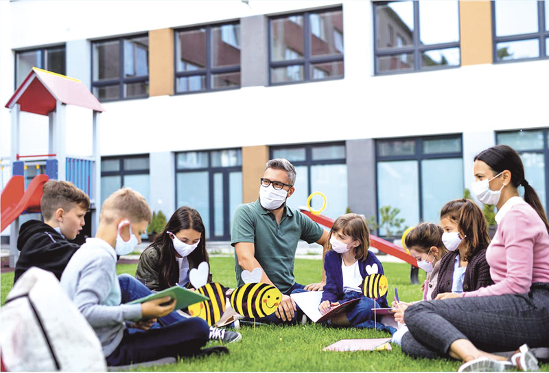

El Rol del Docente en la Educación Ambiental

Docentes como agentes de cambio
El docente no es solo transmisor de contenidos: es facilitador de aprendizaje, inspirador de actitudes y promotor de acciones que vinculan la escuela con la comunidad. Su formación inicial y continua es clave para implementar prácticas pedagógicas que fomenten la sostenibilidad.
Funciones principales
- Facilitador del aprendizaje activo: Diseña experiencias como proyectos de reciclaje, huertos y estudios de campo.
- Formador de visión ambiental: Promueve una mirada crítica sobre causas y soluciones de los problemas ambientales.
- Artífice de identidad ecológica: Su actitud y compromiso influyen en la motivación del estudiantado.
- Integrador curricular: Articula contenidos de distintas asignaturas en torno a proyectos ambientales.
- Promotor institucional: Lidera acciones escolares y vincula la institución con actores locales.
Desafíos y oportunidades
Entre los retos destacan la falta de formación especializada, recursos limitados y estructuras curriculares rígidas. Sin embargo, el uso de metodologías activas, recursos TIC y alianzas con la comunidad ofrecen oportunidades poderosas para transformar la práctica educativa.
Ejemplos prácticos
- Proyectos de servicio comunitario: limpieza de cuencas, campañas de ahorro de agua.
- Proyectos interdisciplinarios: integrando ciencias, matemática y arte para resolver problemas locales.
- Uso de TIC: creación de vídeos educativos, recopilación de datos ambientales y mapeo participativo.
← Regresar